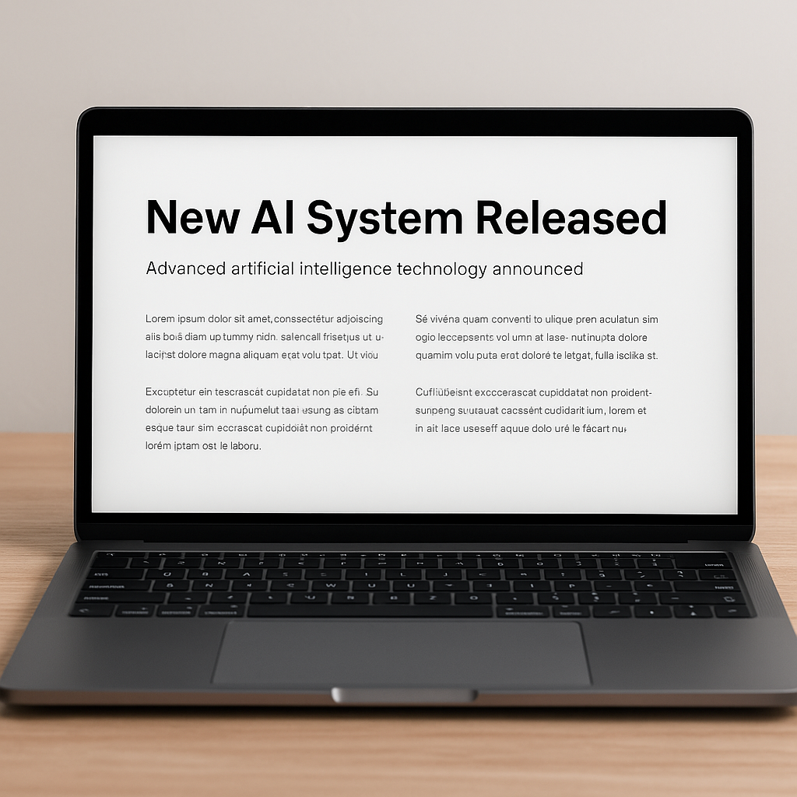

Apple avduker ny AI-drevet MacBook: En milepæl innen bærbare datamaskiner
Hvordan en slik baærbar MacBook kan se ut.

2. april 2025
Hentet fra CHAT.gpt
Apple har nok en gang satt standarden for teknologi med lanseringen av sin nye MacBook, som er utstyrt med en revolusjonerende AI-drevet prosessor. Den nye maskinen, som ble presentert under en eksklusiv pressekonferanse i Cupertino, lover bedre ytelse, lengre batteritid og en mer intuitiv brukeropplevelse takket være avansert maskinlæring.
Kraftig AI-integrasjon
Den nye MacBook-modellen benytter seg av Apples nyeste M3-chip, som er designet for å optimalisere ytelsen ved hjelp av kunstig intelligens. AI-motoren i prosessoren gir raskere bildebehandling, forbedret talegjenkjenning og smartere automatisering av oppgaver. Ifølge Apple vil dette gi brukerne en mer strømlinjeformet opplevelse, spesielt innen kreativt arbeid som videoredigering og 3D-modellering.
Forbedret batteritid og ytelse
En av de største forbedringene med den nye MacBook-en er batterilevetiden. Takket være effektiv ressursstyring fra AI-prosessoren kan brukerne forvente opptil 30% lengre batteritid sammenlignet med forrige generasjon. Dette gjør den ideell for studenter, profesjonelle og alle som er på farten.
Sikkerhet i fokus
Apple har også lagt stor vekt på sikkerhet i den nye maskinen. Med en forbedret Secure Enclave og maskinlæringsbasert deteksjon av trusler, er MacBook-en mer beskyttet enn noensinne. Dette er spesielt viktig i en tid der cybersikkerhet er et stadig voksende bekymringsområde.
Ekspertuttalelser og brukernes forventninger
Teknologianalytikeren Mark Stevens uttaler at denne lanseringen representerer et stort skritt fremover for bærbare datamaskiner. "Apple har igjen vist at de leder an i utviklingen av personlige datamaskiner. Deres bruk av AI i maskinvare setter en ny standard for hele bransjen," sier han.
På sosiale medier er det stor entusiasme rundt lanseringen, og mange brukere gleder seg til å teste den nye teknologien i praksis. Spesielt utviklere og innholdsskapere har uttrykt stor interesse for de avanserte funksjonene.
Tilgjengelighet og pris
Den nye MacBook-en vil være tilgjengelig for forhåndsbestilling fra neste uke og forventes å komme i butikkene i løpet av de neste månedene. Startprisen vil ligge på rundt 20 000 kroner, avhengig av konfigurasjonen.
Konklusjon
Med denne nyvinningen befester Apple sin posisjon som en ledende aktør innen teknologi. Den AI-drevne MacBook-en viser hvordan kunstig intelligens kan integreres i maskinvare for å forbedre ytelse, batteritid og sikkerhet. For mange vil dette kunne være en gamechanger, og det blir spennende å se hvordan markedet reagerer på denne banebrytende teknologien.